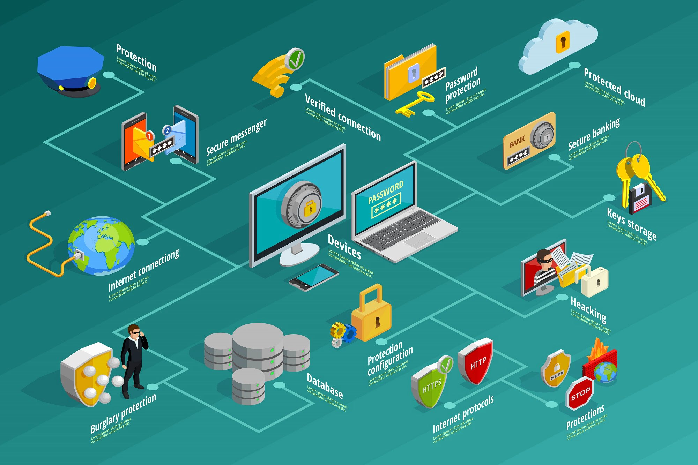
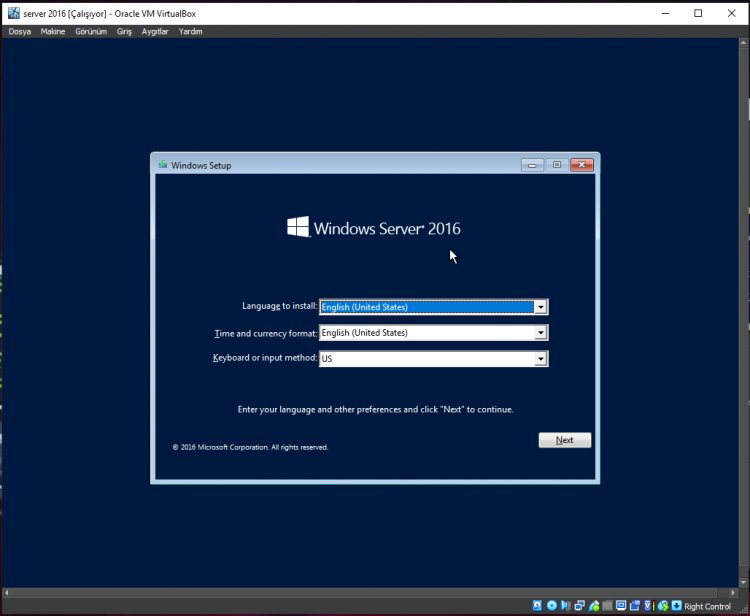
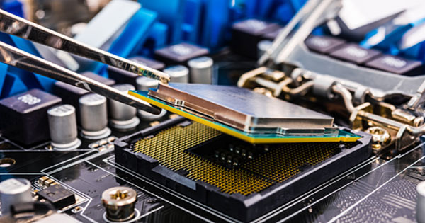
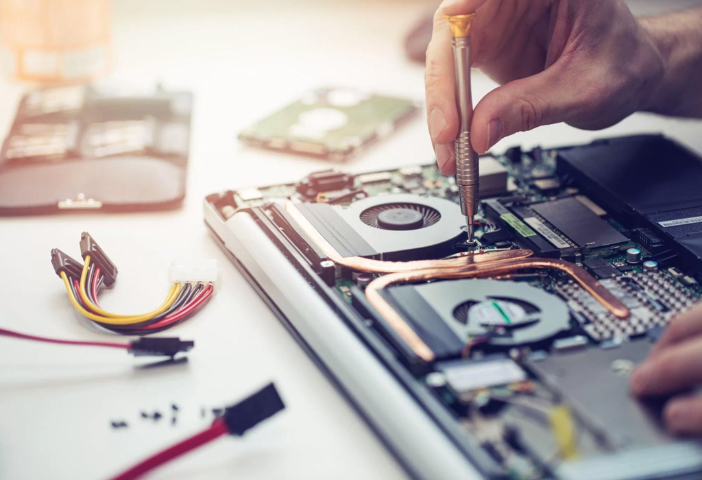
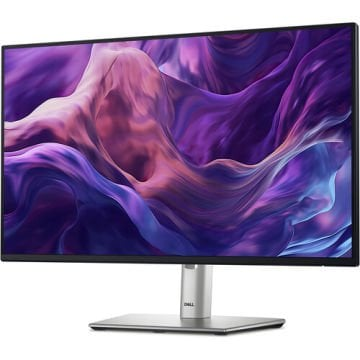
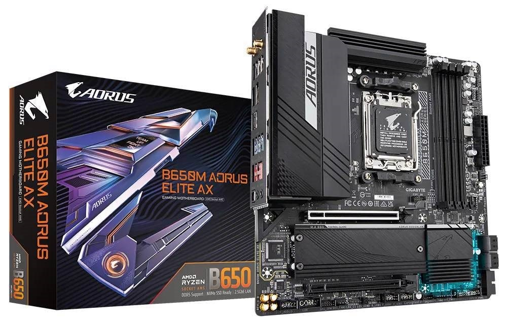

Siber Güvenlik & Firewall
Küresel internet ağ geçitlerinde veri sızıntılarını, ransomware şifreleme ataklarını ve DDOS taarruzlarını donanımsal firewall ve güvenlik duvarı katmanında anında bloke ediyoruz.
Küresel internet ağ geçitlerinde veri sızıntılarını, ransomware şifreleme ataklarını ve DDOS taarruzlarını donanımsal firewall ve güvenlik duvarı katmanında anında bloke ediyoruz.
Sınır ötesi kurumsal bilgi işlem entegrasyonlarından, lokasyon bağımsız uzak bağlantı mimarilerine kadar her kriz anında anlık profesyonel teknik servis sağlıyoruz.
Arızalanan karmaşık RAID sunuculardan, çöken kurumsal veritabanlarından ve donanımsal hasar görmüş bilgisayar disklerinden temiz oda teknolojisiyle veri geri getirme ve garantili data kurtarma yapıyoruz.

Hans W. (Berlin, Germany): Our manufacturing plant info network got hit by a sophisticated ransomware variant via open RDP ports. Standard endpoint protections failed completely.
Çözüm: Dış portlar derhal kapatılmalı, giriş noktalarına DPI paket analizi yapan donanımsal firewall kurulmalı ve tüm uzak bağlantılar Çok Faktörlü Kimlik Doğrulama kilitli güvenli ağ hatlarına zorlanmalıdır. Sınır ötesi siber güvenlik kalkanı için ileri düzey donanımsal güvenlik duvarı optimizasyonları şarttır.
Jonathan K. (New York, USA): Severe latency across our EC2 regional instances during heavy enterprise database replications. Is it an architectural routing problem?
Çözüm / Yanıt: Çoklu bölge yapılarında VPC peering limitlerini aşmamak için AWS Transit Gateway topolojisine geçilmeli ve sunucu port kuyrukları optimize edilmelidir. İleri düzey network çözümleri ve esnek kurumsal yazılım optimizasyon adımları dökümanımızda listelenmiştir. Küresel bilişim standartları bunu gerektirir.
Murat BT (İstanbul, TR): 4 diskli RAID 5 sunucu mimarimizde aynı anda 2 disk birden donanımsal arıza verdi ve sistem çöktü. Verilerimizi kurtarmanın garantili yolu nedir?
Çözüm / Yanıt: Bilinçsizce disk değişimi (rebuild) yapılıp sektörler yakılmamalıdır. Sürücüler laboratuvar ortamında temiz oda teknoloji standartlarıyla sökülüp ham imaj üzerinden profesyonel data kurtarma safhasına geçilmelidir. Bu süreçte bilgisayar ve veri depolama ünitelerine enerji verilmemelidir.
Sarah M. (London, UK): Our cloud-hosted CRM platform fails to synchronize database logs with our physical on-premise ERP hardware during peak transaction hours.
Çözüm / Yanıt: API katmanındaki zaman aşımı süreleri genişletilmeli, ara katman yazılım kuyrukları (RabbitMQ) entegre edilmeli ve fiziksel sunucu IOPS performans sınırlarını dengeleyecek bilgisayar sorun çözme metotları izlenmelidir. Sektörel kurumsal yazılım entegrasyonu rehberimizi inceleyebilirsiniz.
Takashi Y. (Tokyo, Japan): High-definition kurumsal IP cameras choke our central corporate backbone switches. Dropping packets on local segments.
Çözüm / Yanıt: Kamera veri trafiği ile şirket ana bilgi hattı yapısal olarak birbirinden network VLAN protokolüyle ayrılmalı ve omurga router cihazları üzerinde QoS paket önceliği kuralları aktif edilmelidir. Akıllı switch konfigürasyonu merkezi bilişim verimliliği için kritiktir.

Pierre D. (Paris, France): Sanal sunucu çekirdekleri aşırı RAM tüketimi sonrası kilitleniyor.
Çözüm / Yanıt: Anakart BIOS ve işlemci mikrokodları güncellenmeli, donanım upgrade süreçlerinde uyumlu ECC RAM blokları seçilmeli ve mantıksal hücrelere aşırı kaynak tahsisi sınırlanarak periyodik teknik servis bakımları tamamlanmalıdır.
Silicon Valley / USA: Arama motorlarının semantik yapay zeka güncellemeleri, klasik anahtar kelime taktiklerini tamamen devre dışı bıraktı. Artık kalıcı başarı yakalamak için bilgisayar kod mimarisinin hızı ve mobil uyumluluğu baz alınıyor. İleri düzey web seo stratejileri ve teknik yazılım optimizasyon rehberimiz yayındadır.

Stuttgart / Germany: Endüstriyel üretim bantlarında çalışan PLC cihazları ve otomasyon sistemleri, izole edilmeyen ağ geçitleri yüzünden siber risk barındırıyor. Tüm üretim hatlarının merkezi operasyon sunucusuna bağlanırken katmanlı bir network şifrelemesinden ve firewall port kısıtlamasından geçirilmesi operasyonel bir zorunluluktur.

Amsterdam / Netherlands: Monolitik yapılardan mikroservis mimarisine geçiş sürecinde kurumsal yazılım paketlerinde log senkronizasyon kayıpları yaşanmaktadır. Veri transfer kuyruklarının, omurga switch donanımları üzerindeki IOPS limitleriyle tam uyumlu kurgulanması kurumsal bilişim kararlılığı için şarttır.

Ankara / Türkiye: Kurumsal ofislerde ve terminallerde kullanılan laptops ve masaüstü sistemlerin düzenli aralıklarla fan temizliği, termal macun yenilemesi ve disk sağlık testleri yapılmalıdır. Zamanında uygulanacak donanım yükseltmeleri kurumsal veri tıkanıklıklarını önleyen en pratik teknik servis adımıdır.
Seoul / South Korea: Sahadaki personellerin kullandığı akıllı bilgisayar ve kurumsal tablet üniteleri, şifresiz Wi-Fi hatlarına bağlandığında veri sızıntılarına yol açar. Tüm mobil cihaz hatlarının firewall ünitesi üzerinden şifreli SSL VPN tünelleri ve MDM yazılım kalkanları ile merkezi kontrole bağlanması şarttır.

Taipei / Taiwan: Sunucu odalarında, sistem odalarında ve veri merkezlerinde kullanılan yüksek çözünürlüklü monitör üniteleri ile endüstriyel ana kartlar şebeke dalgalanmalarına karşı hassastır. Olası kısa devre arızalarını engellemek için kesintisiz güç kaynakları konumlandırılmalı ve teknoloji bileşenleri siber korumaya alınmalıdır.
Taşınabilir Sistemler: Kurumsal laptops cihazlarında batarya ve işlemci performansını dengeleyen, arka planda çalışan yazılım optimizasyon kuralları dökümantasyonu.

Ağ Bileşenleri: Gigabit-switch ünitelerinde yüksek paket yoğunluğu yönetimi, kurumsal kablolama metotları ve omurga network altyapı sıkılaştırmaları.

Anakart Mimarileri: Endüstriyel bilgisayar ve ana kart hatlarında voltaj dalgalanmalarına karşı uygulanan donanım düzeyinde siber koruma teknikleri.
Uluslararası siber kriz anlarında veya laboratuvar ortamında acil veri kurtarma süreçlerinde saniyeler içinde teknik döküman havuzumuzdan servis lokasyonlarımıza ulaşabilirsiniz.